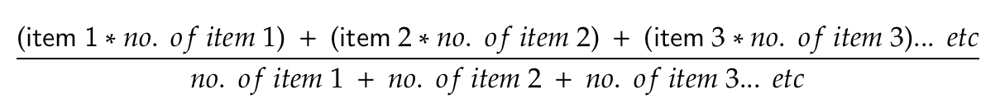
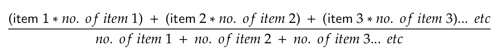
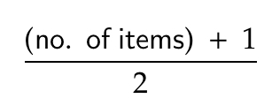

Calculation of mean:

Calculation of median:
Step 1 - Find middle position

If middle position is whole number, item at that position is the median.
If middle position is a decimal (e.g. 5.5), median is mean of 2 neighbouring whole numbers. (e.g. if middle position = 4.5, median is mean of 4th and 5th position)
Calculation of mode:
Mode is the item that occurs most frequently in the data set.
E.g. 1, 1, 3, 3, 3, 9; mode is 3
E.g. 1, 1, 1, 3, 3, 3, 8; mode is 1 and 3
E.g. 1, 1, 4, 4; no mode (no item is more frequent than the others)